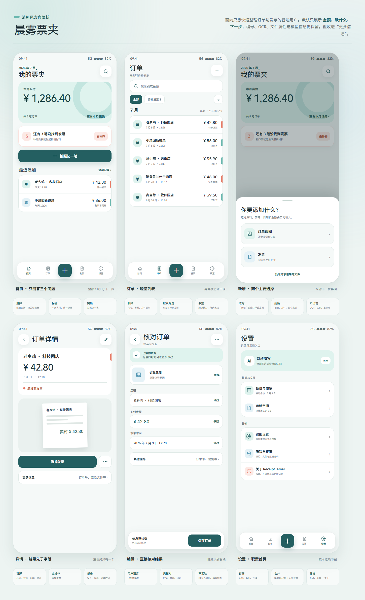

首页少 5 类常驻信息移除状态章、已关联数量、订单尾号、餐别和技术提示。
每屏只留 1 个主操作首页拍照、详情补发票、编辑保存，视线不再被多个入口争抢。
能力没有删除编号、OCR、模型、文件属性进入更多信息或二级设置。

| 界面 | 墨色账簿 | 晨雾票夹 |
|---|---|---|
| 首页 | 月实付、订单数、已关联、待关联、四个任务入口 | 月实付、待补提醒、拍照记一笔 |
| 列表 | 日期、餐别、尾号、金额、关系状态 | 商家、日期、金额；仅异常时显示状态 |
| 详情 | 凭证、金额、完整字段、关联记录并列 | 结果与凭证优先，编号和文件属性折叠 |
| 编辑 | 来源文件、AI 提取、字段校对、关联、保存 | “已帮你填好”，只核对店铺、金额和日期 |
| 设置 | 模型、云端、存储、法律与版本均在首屏 | 识别、备份、存储在首屏，其余合并下钻 |